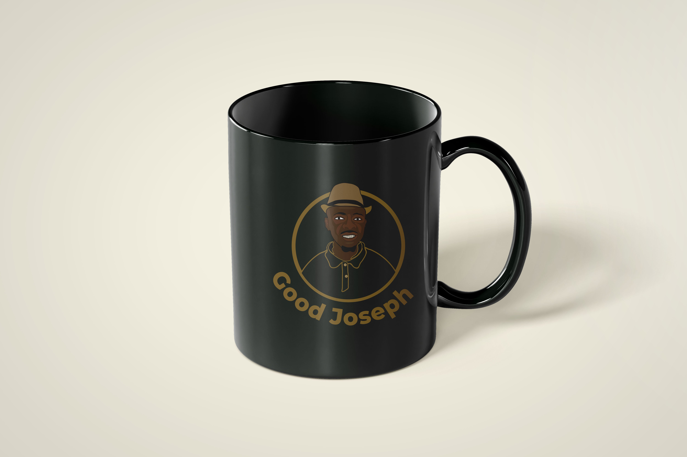
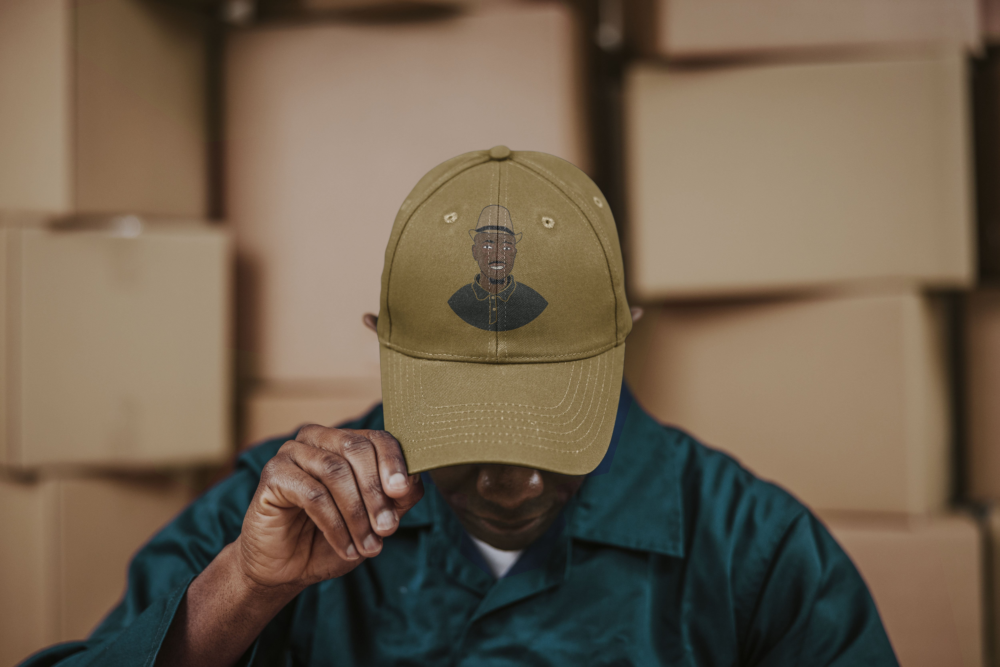
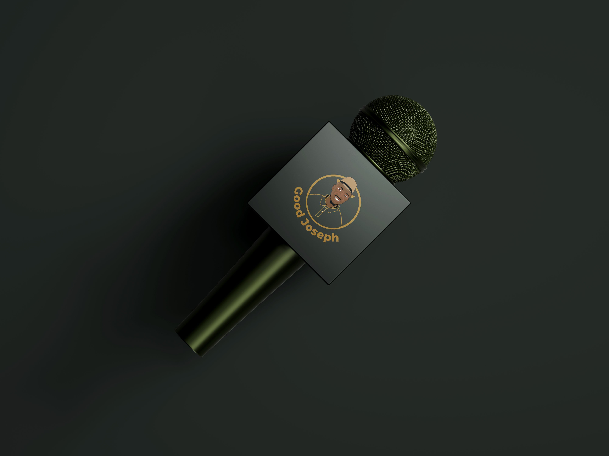

Good Joseph Logo Design
Project Snapshot
This logo design project created a mascot-driven identity for a financial literacy channel. The goal was to make the brand feel personal, modern, and recognizable across video and social channels.
Overview
I created a logo for the Good Joseph channel, a financial literacy YouTube channel. Because the channel is named after its host, I designed a mascot-style logo to personalize it.





Outcome
The project resulted in a bold, recognisable identity system that supports content creation and brand consistency across platforms.
Need a similar design? Get a quote.